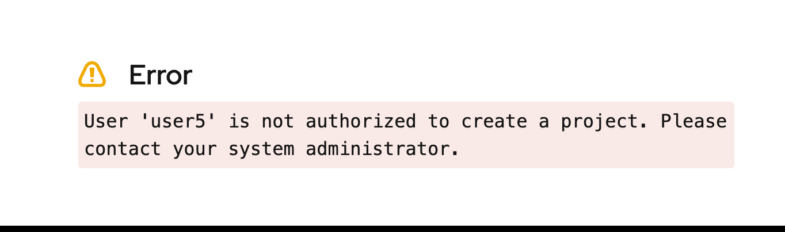

Granular Access Control in Dev Spaces
In the previous section, you learnt how to manage authentication and access to Dev Spaces. In large enterprise environments with a large number of developers from different organizations and teams trying to access Dev Spaces, you need more finer grained control over who is allowed to access Dev Spaces.
A simple approach is to create OpenShift Groups and add users to these groups. You can then control access to Dev Spaces at both the group level as well as individually allow or deny access to users.
This configuration is done at the CheCluster CR level so it is applicable to all workspaces in Dev Spaces.
|
Enabling Advanced Authorization in the CheCluster CR
You can edit the CheCluster CR YAML and enable advanced authorization that gives you finer grained access control to the Dev Spaces workspaces. There are four attributes available:
- allowGroups
-
Only users in these groups are allowed access
- allowUsers
-
Only the individual users listed in this attribute will be allowed access
- denyGroups
-
All users in the groups listed are denied access
- denyUsers
-
All users listed in this attribute are denied access
If these attributes are missing in the CheCluster CR, then ALL users are allowed access to Dev Spaces.
|
| If the same users and groups exist in the allow and deny lists, then the DENY lists take precedence and the users and groups will be denied access. |
Lab: Enhanced Authorization with Dev Spaces
Pre-requisites
You must have created the admin user with cluster-admin privileges and five users (user1..user5) that can access Dev Spaces as a regular developer user.
$ oc get users
NAME ... IDENTITIES
admin ... htpasswd_provider:admin
user1 ... htpasswd_provider:user1
user2 ... htpasswd_provider:user2
user3 ... htpasswd_provider:user3
user4 ... htpasswd_provider:user4
user5 ... htpasswd_provider:user5Steps
-
Log in as the
adminuser using theocCLI$ oc login -u admin <OpenShift API URL> -
Create a new OpenShift group named
dev-team. This group will contain all developers whom you wish to provide access (to Dev Spaces)$ oc adm groups new dev-team group.user.openshift.io/dev-team created -
Add
user2to thedev-teamgroup. You can add more users to this group if you want.$ oc adm groups add-users dev-team user2 group.user.openshift.io/dev-team added: "user2" -
List the users in the
dev-teamgroup and verify that the users you added in the previous step are visible.$ oc get groups dev-team --output jsonpath={.users} ["user2"] -
In the next steps, you will enable advanced authorization by editing the
devspacesCheCluster CR. Before you do this, verify that other users not in thedev-teamgroup can access the Dev Spaces dashboard and launch workspaces. -
Edit the
devspacesCheCluster CR:$ oc edit checluster/devspaces -n openshift-devspacesEnable the advancedAuthorization attribute under the networking.auth section in the YAML configuration and save the changes:
spec: components: cheServer: ... devEnvironments: ... gitServices: {} networking: auth: advancedAuthorization: allowGroups: - dev-team gateway: ... -
Wait for a few minutes for the Dev Spaces pods to be restarted with the changes. Log out of all active sessions in Dev Spaces.
-
Log in to OpenShift as the
user2user and then open the Dev Spaces dashboard. You will be allowed to access the dashboard because you explicitly allowed access to thedev-teamgroup, anduser2belongs to the this group. If you added other users to this group, verify that they can access the Dev Spaces dashboard.You may have to open a new browser in private or incognito mode to test other users since your current active browser instance will store the session cookies for user2. -
Now, login as one of the users NOT in the the
dev-teamgroup. For example, when you log in asuser5, you should be denied access, and you will see an error like the following:Figure 1. Access Denied for users not in the allowed group -
Let us image a scenario where you want to control access at the individual user level without adding the user to a group. For example, let us say you want to allow
user5access to Dev Spaces without adding the user to thedev-teamgroup. Make the following changes to thedevspacesCheCluster CR:... networking: auth: advancedAuthorization: allowGroups: - dev-team allowUsers: - user5 gateway: ... -
Wait for the pods to restart. Log out from all active Dev Spaces sessions. Log in as
user5and verify that the account can access the Dev Spaces dashboard. Experiment with thedenyUsersanddenyGroupsattributes and test out access with various combinations of these four attributes.
| We recommend you roll back the changes (allow full access to all users) you made in this lab before proceeding to the next sections and courses in the learning path. Based on configurations you will be doing in the upcoming sections, you may be confused by access denied and other errors due to improper configuration of role based access. It is better to start with a clean slate for future hands-on labs. You can always selectively enable RBAC after you have configured other features and functions of Dev Spaces. |